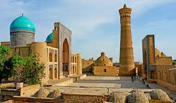
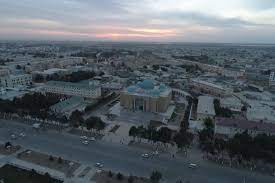

O'zbekiston Respublikasi |
|
| O'zbekiston Respublikasi |
O'zbekiston Respublikasi
|
| Andijon | |
| Buxoro | |
| Farg'ona | |
| Jizzax | |
| Namangan | |
| Navoiy | |
| Qashqadaryo | |
| Qoraqalpog'iston | |
| Surxondaryo | |
| Sirdaryo | |
| Samarqand | |
| Toshkent viloyati | |
| Toshkent shahri | |
| Xorazm | |
Andijon viloyati — Oʻzbekiston Respublikasi tarkibidagi viloyat. Fargʻona vodiysining sharqiy qismida. 1941-yil 6-martda tashkil etilgan. Maydoni 4,2 ming km². Aholisi 3 253 501 kishi (2022-yil 1-yanvar holatiga). Andijon viloyatida 14 qishloq tuman, 11 shahar va 95 qishloq fuqarolari yigʻini bor (2000). Markazi — Andijon shahri.[2] Tabiati Andijon viloyati yer yuzasi asosan tekislik. Hozirgi relyefi va yer yuzasidagi jinslar toʻrtlamchi geologik davrning katta-kichik daryolari va irmoqlarining faoliyatidan hosil boʻlgan. Viloyatning gʻarbiy qismi qirli tekislik (bal. 400-500 m), sharqi (Andijon shahridan sharda) Fargʻona va Olay tizmalarining tarmoqlaridan iborat. Andijon viloyati geologik aktiv zonada joylashgan, kuchli zilzilalar boʻlib turadi (qarang Andijon zilzilasi). Ixdimi keskin kontinental, quruq. Togʻ tkzmalari Fargʻona vodiysini sovuq havoning kirib kelishidan toʻsib turganligi uchun qishda Andijon viloyatida ob-havo birmuncha barqaror. Yozi issiq, iyulning oʻrtacha temperaturasi 27,3°, kishi nisbatan sovuq, yanvarning oʻrtacha temperaturasi −3°. Vegetatsiya davri 217 kun. Yiliga 200 — 250 mm yogʻin tushadi. Av. Oʻzbekistonning boshqa viloyatlariga nisbatan suv resurslariga boy. Daryolari yogʻindan, togʻlarlagi koʻp yillik qor va muzliklardan suv oladi. Asosiy daryosi — Qoradaryo (Sirdaryo irmoqlaridan biri). Uning irmoqlari — Moylisuv, Oqboʻra, Aravonsoy va boshqa Av. daryolarining suvi sugʻorish uchun ishlatiladi. Tuproqlari boʻz, qoʻngʻir, oʻtloqi, oʻtloqi-botqoq tuproqlar, qumtosh, mergel, less va chaqirtoshlardan iborat. Bahorda adirlar efemer oʻsimliklar bilan qoplanadi. Av.ning ekin ekilmaydigan tekislik qismida shuvoq-shoʻra oʻsimliklari, togʻ yon bagʻirlarida pista, bodom oʻsadi. Yovvoyi hayvonlar (buri, tulki, qobon va boshqalar) kam uchraydi; sudraluvchilar, kemiruvchilar, qushlar, suv havzalarida baliqlar bor. Aholisining koʻpchiligini oʻzbeklar tashkil etadi. Qirgʻizlar, Tojiklar, Uygʻurlar, Ruslar, Koreyslar, Qangli VA boshqalar ham bor. Rossiya Qoʻqon xonligini bosib olgach, bu yerga rus, ukrain, tatar, arman, yahudiy va boshqa millat vakillari koʻchib kelgan. 1 km² ga oʻrtacha 517 kishi toʻgʻri keladi. Milliy tarkibi: oʻzbeklar — 86,8 %, qirgʻizlar 3,8 %, tatarlar 3,1 %, Qanglilar 2%, ruslar 2 %. Shaharliklar 657,7 ming kishi, qishloq aholisi 1539,2 ming kishi (2000).
Buxoro — Oʻzbekiston Respublikasining qadimiy shaharlaridan biri, Buxoro viloyatining maʼmuriy, iqtisodiy va madaniy markazi. O'zbekistonning ilk poytaxti. Buyuk ipаk yoʻlida yirik tijorat markazlaridan boʻlgan. Oʻzbekistonning janubiy-gʻarbida, Zarafshon daryosi quyi oqimida joylashgan. Toshkentdan 616 km. Buxoro 2 ta shahar rayoni (Fayzulla Xoʻjayev va Toʻqimachilik)ga boʻlingan. Aholisi 290000 (2019). Aholisining katta qismini o'zbeklar tashkil etadi. Oliy ta‘lim muassasalari: "Buxoro davlat universiteti", " Buxoro muhandislik-texnologiya instituti". Nomlanishi va etimologiyasi Buxoro shahri qadim zamonlarda qanday nomlangani — nomaʼlum. Milodiy V asrga oid xitoy manbalarida Buxoro shahri Nyumi tarzida tilga olinib oʻtilgan. Binobarin, shaharda shu nomdagi mulk hukmdorining qarorgohi ham boʻlgan. Tan imperiyasining VII asrga oid solnomalarida Buxoro shahri An (Ango), Ansi, Buxo (Buxe, Fuxo) shakllarida qayd etib oʻtilgan. Keyinchalik shahar har xil nomlana boshladi. Arab qadimiy manbalarda u Bumiskat, Madinat us-sufriya (Mis shahar), Numijkat (soʻgʻdcha numij yoki namich degani mashhur degan maʼnoni anglatgan) tarzida keltirilgan. Qadimiy zamonlarda yashagan mahalliy mualliflarning fikricha, shaharning nomi Buxor, yaʼni "Sanamlar turgan ibodatxona" maʼnosini anglatuvchi bir soʻzdan kelib chiqqan. Ayrim tadqiqotchilarning faraz qilishlaricha, Buxoro nomi mintaqaning eng asosiy buddaviylik ibodatxonasi vixara yoki ana shu vixaraning sug'diy transkripsiyasi boʻlmish buxoro (ibodatxona) soʻzidan kelib chiqqan. Ammo buddaviylik va moniylik diniy taʼlimotlariga oid osori atiqalar shahar hududida ham, umuman, Buxoro vohasida ham topilgan emas. Buxoro (Buxara) toponimi ilk bor Soʻgʻd yozuvlari bilan Buxoroda zarb qilingan mis tangalarida tilga olingan (milodiy IV-V asrlar).[2]
Fargʻona viloyati — Oʻzbekiston Respublikasi tarkibidagi viloyat. 1938-yil 15-yanvarda tashkil etilgan. Respublikaning sharqida, Fargʻona vodiysining janubida joylashgan. Shimoldan Namangan, Andijon viloyatlari, janub va sharqdan Qirgʻiziston, gʻarbdan Tojikiston Respublikalari bilan chegaradosh. Maydoni 6,8 ming km2. Aholisi 2020-yilda 3,817,000 kishi. Tarkibida 15 tuman, 9 shahar (Beshariq, Margʻilon, Rishton, Fargʻona, Yaypan, Quva, Quvasoy, Qoʻqon, Hamza), 10 shaharcha, 164 qishloq fuqarolari yigʻini bor (2004). Markazi — Fargʻona shahri. Tarixi Xudoyorxon oʻrdasi Fargʻona darvozasi Fargʻona xalqaro aeroporti Fargʻona viloyati Oʻzbekistonning qadimgi madaniyat oʻchoqlaridan biri. Viloyat hududida topilgan tosh davri manzilgohlari va qoyatoshlariga solingan suratlar vodiyda odamlar eng qadimgi davrlardan beri yashab kelganliklaridan darak beradi. Fargʻona viloyatining tosh davri yodgorliklarini 1954-yil A. P. Okladnikov rahbarligidagi arxeologiya otryadi oʻrgangan. Vodiyning sharqiy qismidagi Qayroqqum, Xoʻjagʻor va Uchqoʻrgʻon makonlaridan mustye davriga oid tosh qurollar topildi. Vodiyning gʻarbiy qismidagi qadimgi tosh davri madaniyatiga oid manzilgohlar mustye davridagi Qalʼacha, Jarqoʻton va Qapchigʻay tosh qurollar ishlash ustaxonalari topilib oʻrganildi. 1958-yil birinchi marta Markaziy Fargʻonadan mezolit davriga oid mikrolit tosh qurollari topildi. Shuningdek, Markaziy Fargʻonadagi Uzunkoʻl va Tayloqkoʻl atroflaridan mezolit va neolit davrlariga oid 24 ta manzilgoh borligi aniqlandi (1965). Soʻx vohasidagi 28 gʻor va ungurlar (Selungur, Eshma, Obishir, Sur, Bel, Zim, Ovikambar, Bogʻishim va boshqalar) roʻyxatga olindi. Obishir gʻorlaridagi madaniy qatlam yaxshi saklangan. Gʻorlarni qazish jarayonida mezolit davriga oid tosh qurollar, xayvon suyaklari topilgan. Bular oʻsha davr turmushini oʻrganish imkonini beradi. 1967 va 1969—70 yillarda Sankt-Peterburgdagi Ermitaj muzeyi xodimlari mezolit va neolit davrlariga oid 35 ta manzilgoh topdilar. Fargʻona viloyatining arxeologik yodgorliklarini oʻrganishda Katta Fargʻona kanalining qazilishi muhim ahamiyatga ega boʻldi. Kanalni qazish jarayonida jez davri, quldorlik va zamindorlik jamiyatlariga oid yodgorliklar topildi va tekshirildi. Quva va Toshloq tumanlari oʻrtasidagi Akbarobod qishlogʻida jez davriga oid manzilgoh, Margʻilonsoyning chap sohilida Oqtom qabristoni boʻlganligi aniqlandi. Fargʻona viloyatining Quva tumanida quldorlik davriga oid Taxyontepa, Fargʻona shahrida Simtepa (Chimtepa) kabi yodgorliklar topib oʻrganilgan. Ayniqsa, Quva shahridagi miloddan avvalgi 5-asr va oʻrta asr boshlariga oid topilmalar yaxshi tekshirilgan. 10-11-asrlarga doir tarixiy manbalarda bu shahar obodligi va kattaligi jihatidan vodiyda Axsikatdan soʻng eng yirik shahar deb qayd qilingan. Arxeologik materiallar Margʻilon shahri 10-asrda katta qishloq boʻlib, 11-12-asrlarda shaharga aylanganligini, Rishton esa 10-asrda katta shahar boʻlsa ham, 11-12 asrlarga kelib qishloq qiyofasiga kirib qolganligini isbotlaydi. Oʻtroq dehqonchilik, chorvachilik bilan shugʻullangan Chust madaniyatiga oid manzilgohlardan topilgan yodgorliklar Fargʻona vodiysini oʻrganishda muhimdir. U yerda ishlab chiqarish kuchlari va xoʻjalikning taraqqiyoti jez davrining oxirida dehqonchilik qabilalarining ijtimoiy tuzumida oʻzgarish yuz berishiga, natijada ibtidoiy tartiblar tugab, jamiyatdagi tabaqalanishga olib kelgan. Roʻzgʻor anjomlarida xususiy mulkchilik kurtaklari koʻzga tashlanadi. Arxeologik tekshirishlar natijasi Fargʻona viloyatida qadimdan odamlar yashab, ovchilik, dehqonchilik, chorvachilik bilan shugʻullanganligidan, kishilik jamiyatining keyingi bosqichlarida esa madaniyat rivojlana boshlaganligidan dalolat beradi.
Jizzax viloyati — Oʻzbekiston Respublikasi tarkibidagi viloyat. Respublikaning markaziy qismida. 1973-yil 28-dekabrda tashkil etilgan. Shim.-sharqda Qozogʻiston Respublikasi va Sirdaryo viloyati, janubi-gʻarbda Samarqand, Navoiy viloyatlari, janubisharqda Tojikiston Respublikasi bilan chegaradosh. Maydon 21,2 ming km2. Aholisi 1 466,6 ming kishi (2022). Jizzax viloyatida 12 qishloq tumani (Arnasoy, Baxmal, Doʻstlik, Sharof Rashidov, Zarbdor, Zafarobod, Zomin, Mirzachoʻl, Paxtakor, Yangiobod, Forish, Gʻallaorol), 9 shahar (Gagarin, Dashtobod, Doʻstlik, Jizzax, Marjonbuloq, Paxtakor, Gʻallaorol,Zarbdor,Zomin), 8 shaharcha (Boʻston, Zafarobod, Oʻsmat, Uchquloch, Bogʻdon,Pishagʻar,Qoʻytosh,Sharq yulduzi), 95 qishloq fuqarolari yigʻini bor (2001). Markazi — Jizzax shahri (Jizzax viloyati tumanlari haqida tegishli maqolalarga q.) Tabiati Relyefi togʻlik, qir va tekisliklardan iborat. Janubiy qismini Turkiston tizmasining tarmoqlari (Molguzar tizmasi), gʻarbini Nurota tizmasining sharqiy qismi egallagan. Shim., shimoli-gʻarbi va sharqiy qismi (Mirzachoʻl va Qizilqum choʻlining janubi-sharqi) tekislikdan iborat. Iqlimi keskin kontinental. Yanvarning oʻrtacha tempaturasi -G dan —4° gacha, iyulniki 28°. Togʻ oldilarida iqlim choʻl va dashtlarga nisbatan yumshoq.-yillik yogʻin viloyat janubida 400-500 mm, shimolida 250- 300 mm. Vegetatsiya davri 210—240 kun.-yillik quyoshli kunlar 2800—3000 soat. Eng yirik daryolari — Sangzor, Zominsuv. Togʻlardan oqib tushuvchi soy koʻp. Ekinlarni sugʻorish uchun Tuyatortar kanali, 1- va 2-Janubiy Mirzachoʻl kanallari, Jizzax, Zomin, Qorovultepa suv omborlari qurilgan. 2001-yilda Arnasoy suv ombori qurila boshlandi. Arnasoy, Aydarkoʻl va Tuzkon koʻllaridan baliqchilikda foydalaniladi. Togʻ yon bagʻirlarida yovvoyi jiyda, archa, bodom, yongʻoq, naʼmatak, zira, rovoch, zirk kabilar oʻsadi. Yovvoyi hayvonlardan oq tirnoqli ayiq, chiyaboʻri, tulki, quyon, qobon, boʻrsiq, jayra uchraydi; burgut, lochin, qora turna, bulduruq, tuvaloq, tustovuq, qirgʻovul, yovvoyi oʻrdak, kaklik kabi qushlarning 150 dan ortiq turi mavjud. Viloyatda Zomin milliy bogʻi, Zomin va Nurota davlat quriqxonalari tashkil qilingan. Tarkibida temir, oltingugurt, vodorod, radiy, kremniy kislotasi, karbon gazi, ishqor boʻlgan shifobaxsh mineral suvlar bor. Gʻallaorol, Forish, Mirzachoʻl tumanlarida balneologik sanatoriylar faoliyat koʻrsatadi. Sulfatxlorid natriyli Chimqoʻrgʻon balchigʻidan fizioterapiya va davolash profilaktika muassasalarida foydalaniladi. Foydali qazilmalardan oltin, kumush, volfram, qoʻrgʻoshin, rux, temir, molibden, marmar, vollastonit, bazalt, granit, korund, ohak bor. Aholisi 1 km2 ga 46,9 kishi toʻgʻri keladi (2001). Aholining koʻpchiligi oʻzbeklar, shuningdek, qozoq, qirgʻiz, tojik, rus, tatar, turk, ukrain, nemis, fors, arman va b. Jami 70 dan ortiq millat vakili yashaydi. Shaharliklar 30 %, qishloq aholisi 70 % ni tashkil etadi.
Namangan — Namangan viloyatidagi shahar. Viloyatning maʼmuriy, iqtisodiy va madaniy markazi Aholi soni boʻyicha Fargʻonadan oldingi oʻrinda. Oʻzbekistonning yirik shaharlaridan biri. Fargʻona vodiysining har jihatdan peshqadam viloyati. Vodiyning shim.da, Shim. Fargʻona kanali bilan Namangansoy kesishgan yerda, 450 m balandlikda joylashgan. Maydoni 83,3 ming km². Iyulning oʻrtacha temperaturasi 26,3°, yanv.niki —2,3°. Aholisi 1mln ming kishi atrofida (2021).[1] Fargʻona vodiysining qad. poytaxti Axsikat (Axsikent) 1620-yildagi qattiq zilzila natijasida vayron boʻlganligi sababli, uning aholisi hozirgi Namangan shahri hududiga koʻchib oʻtgan. Namangan tuz koni ("Namak kon") yaqinida vujudga kelgan boʻlib, shahar nomi oʻrta asrlarga oid tarixiy xujjatlarda birinchi marta tilga olinadi. Zahiriddin Bobur oʻzining "Boburnoma" (16-asr) asarida Namangan qishlogʻi haqida gapirib oʻtgan. V. P. Nalivkinning ("Qoʻqon xonligining qisqacha tarixi", Qozon, 1886) yozishicha, Namangan 1643-yilga mansub vaqf hujjatlarida uchraydi. 18-asrda Namangan Qoʻqon xonligiga tobe boʻlgan. Biroq viloyatni boshqaruvchi bek qarorgohi sifatida oʻz ahamiyatini saqlab qolgan. U faqat shahar aholisigina emas, balki atrofdagi tumanlar aholisiga ham xizmat qiluvchi hunarmandchilik markazi boʻlgan. Dehqonlar Namangan bozorlarida ip va gazlamalar, mis idishlar, zargarlik buyumlari va mehnat qurollarini sotib olishgan. Shaharda meʼmorlik sezilarli darajada taraqqiy etgan.
Qashqadaryo viloyati — Oʻzbekiston Respublikasi tarkibidagi viloyat. 1924-yil 1-noyabrda tashkil etilgan. Respublikaning janubi-gʻarbida, Qashqadaryo havzasida, Pomir-Oloy togʻ tizmasining gʻarbiy chekkasida, Amudaryo va Zarafshon daryolari, Hisor va Zarafshon tizma togʻlari orasida. Shimoli-gʻarbdan Buxoro va janubi-sharqdan Surxondaryo viloyatlari, janubi-gʻarb va gʻarbdan Turkmaniston Respublikasi, sharqdan Tojikiston Respublikasi hamda Samarqand viloyati bilan chegaradosh. Maydoni 28,6 ming km². Aholisi 3,225,800 kishidan ziyod (3-oʻrin) (2020). Viloyat hokimi Murotjon Azimov (2021-yil 18-noyabrdan) Tarkibida 14 tumani (Dehqonobod, Kasbi, Kitob, Koson, Mirishkor, Muborak, Nishon, Chiroqchi, Shahrisabz, Yakkabogʻ, Qamashi, Qarshi, Gʻuzor, Koʻkdala tumani), 12 shahar (Beshkent, Kitob, Koson, Muborak, Tallimarjon, Chiroqchi, Shahrisabz, Yakkabogʻ, Yangi Nishon, Qamashi, Qarshi, Gʻuzor), 4 shaharcha (Yangi Mirishkor,Dehqonobod, Miroqi, Eski Yakkabogʻ, Pomuq), 147 qishloq fuqarolari yigʻini, 1064 qishloq bor (2005)
Qoraqalpogʻiston— Oʻzbekiston Respublikasi tarkibidagi respublika. Maydoni 166,6 ming km². Aholisi 2 millionga yaqin (2022). Respublika poytaxti — Nukus shahri. Tarkibida 16 tuman, 12 shahar, 14 shaharcha va 124 fuqarolar yigʻini bor.[1] Davlat tuzumi Qoraqalpogʻiston — parlament boshqaruv shakliga ega boʻlgan O'zbekiston respublikasi tarkibidagi suveren demokratik respublikadir. Qonun chiqaruvchi oliy davlat vakolatli organi — koʻp partiyaviylik asosida 5 yil muddatga saylangan deputatlardan iborat Qoraqalpogʻiston hududi Joʻqorgʻi Kengeshi (QR JK). Qoraqalpogʻiston hududi Joʻqorgʻi Kengeshi raisi respublika rahbari hisoblanib, u Joʻqorgʻi Kengesh deputatlari orasidan 5 yil muddatga saylanadi (faqat ketma-ket 2 muddatdan oshmaydi). Davlat hokimiyatining oliy ijro etuvchi-boshqaruvchi organi Qoraqalpogʻiston Respublikasi Vazirlar Kengashi, yaʼni Qoraqalpogʻiston Respublikasi hukumati hisoblanadi. Qoraqalpogʻistonda Oʻzbekiston Respublikasi Konstitutsiyasi bilan bir vaqtda Qoraqalpogʻiston Oliy kengashining 1993-yil 9-apreldagi 12-chaqiriq 12-sessiyasida qabul qilingan Qoraqalpogʻiston Hududi Konstitutsiyasiga amal qilinadi. Qoraqalpogʻiston oʻz davlat ramzlari: gerb, madhiya va bayrogʻiga ega.

Surxondaryo viloyati — Oʻzbekiston Respublikasi tarkibidagi viloyat. 1941-yil 6-martda tashkil etilgan (1925-yil 29-iyundan Surxondaryo okrugi boʻlgan). 1960-yil 25-yanvarda Qashqadaryo viloyati bilan qoʻshilgan. 1964-yil fevralda qaytadan tashkil qilindi. Respublikaning janubi-sharqida, Surxon-Sherobod vodiysida joylashgan. Viloyat nomi vohadan oqib oʻtuvchi „Surxon“ (fors-tojik: „qizil“) daryosi nomidan kelib chiqqan. Janubidan Amudaryo boʻylab Afgʻoniston, shimoliy, shimoli-sharq va sharqdan Tojikiston, janubi-gʻarbdan Turkmaniston, shimoli-gʻarbdan Qashqadaryo viloyati bilan chegaradosh. Maydoni 20,1 ming km². Aholisi 2612,4 ming kishi (2019-yil 1-oktabr holatiga koʻra). Tarkibida 14 tuman (Angor, Bandixon, Boysun, Denov, Jarqoʻrgʻon, Muzrabot, Oltinsoy, Sariosiyo, Termiz, Uzun, Sherobod, Shoʻrchi, Qiziriq, Qumqoʻrgʻon), 8 shahar (Boysun, Denov, Jarqoʻrgʻon, Termiz, Shargʻun, Sherobod, Shoʻrchi, Qumqoʻrgʻon), 114 ta shaharcha, 865 ta qishloq aholi punktlari mavjud (2020). Markazi — Termiz shahri.
Sirdaryo viloyati viloyat Maʼmuriy markazi Guliston shahri Yirik shaharlari Yangiyer, Sirdaryo, Shirin Asos solingan sanasi 1963-yil Viloyat hokimi Maxmudaliyev Akmaljon Azimjonovich Rasmiy tili oʻzbekchao'zbek Aholi (2022) 900 mingga yaqin (14-oʻrin) Zichligi 210 kishi./km² Millatlar tarkibi oʻzbeklar, tojiklar, qozoqlar, ruslar Dinlar tarkibi musulmonlar Maydoni 4.28 ming km.kv km² (1 %, 12-oʻrin) Sirdaryo viloyati xaritada Sirdaryo viloyati, Xarita Soat mintaqasi UTC+5 Kod ISO 3166-2 UZ-SI Avtomobil raqami kodi 12 (eskisi 1998-2008) 20 (yangisi 2008-yildan) Koordinatalari: 40°25′0″N 68°40′0″E G O Sirdaryo viloyati — Oʻzbekiston Respublikasi tarkibidagi viloyat. 1963-yil 16 fevralda tashkil etilgan. Shimolidan Qozogʻiston Respublikasi, sharqdan Toshkent viloyati, janubidan Tojikiston Respublikasi va gʻarbdan Jizzax viloyati bilan chegaradosh. Maydoni 4.28 ming km. Aholisi 900 migga yaqin kishi (2022). Tarkibida 8tuman (Boyovut, Guliston, Mirzaobod, Oqoltin, Sayxunobod, Sirdaryo, Xovos, Sardoba) (tumanlar haqida alohida maqolalarga qarang, maye. Boyovut tumani), 5 shahar (Guliston, Baxt, Sirdaryo, Shirin, Yangiyer), 6 shaharcha (Boyovut, Dehqonobod, Doʻstlik, Paxtaobod, Sayxun, Xovos) va 75 qishloq fuqarolari yigʻini bor (2004). Markazi — Guliston shahri.
Samarqand viloyati — Oʻzbekiston Respublikasi viloyatlaridan biri hisoblanadi. U 1938-yil 15-yanvarda tashkil topgan. Ushbu viloyat respublika hududining markaziy qismida, Zarafshon daryosining oʻrta oqimi havzasida joylashgan. Uning chegaralari gʻarb va shimoli-gʻarbda Navoiy viloyati, shimol va shimoli-sharqda Jizzax va janubda Qashqadaryo viloyatlari, janubi-sharqda Tojikiston bilan tutash. Viloyatning markaziy qismi goʻzal vohadan iborat boʻlib, bu voha uncha keng boʻlmay sharqdan-gʻarbga tomon Zarafshon va Turkiston togʻ tizmalari orasini egallagan. Viloyatning asosiy sugʻoriladigan yerlari xuddi ana shu maydonlarni egallagan. Aholi soni 2022-yil holatiga koʻra, 4 mln 077 ming 400 kishi. Bu jihatidan Samarqand viloyati respublikada birinchi oʻrinda va respublika aholisining 11.4 foizini tashkil etadi. Viloyat hududi 16,88 ming km². Samarqand viloyati qishloq tumanlari soni boʻyicha Qoraqolpogʻiston Respublikasi va viloyatlar orasida birinchi oʻrinni egalaydi. Bu viloyatda bunday tumanlar soni 16 ta. Ular quyidagilar: Bulungʻur, Jomboy, Ishtixon, Kattaqoʻrgʻon, Narpay, Nurobod, Oqdaryo, Payariq, Past Dargʻom, Paxtachi, Samarqand, Toyloq, Urgut va Qoʻshrabot tumanlari. Shaharlar soni 2 ta, bular Samarqand va Kattaqoʻrgʻon. Koʻhna, noyob tarixiy obidalarga boy boʻlgan Samarqand shahri viloyatning markaziy shahri boʻlib, u 1924—1930-yillarda Oʻzbekiston poytaxti vazifasini bajargan.
Toshkent viloyati — Oʻzbekiston Respublikasi tarkibidagi viloyat. Respublikaning shimoli-sharqida. 1938-yil 15-yanvarda tashkil kilingan. Shimoliy va shimoli-gʻarbdan Qozogʻiston Respublikasi, shimoli-sharqdan Qirgʻiziston Respublikasi, sharqdan Namangan viloyati, janubidan Tojikiston Respublikasi, janubi-gʻarbdan Sirdaryo viloyati bilan chegaradosh. Maydoni (Toshkent shahri maydonisiz) 15,3 ming km². Aholisi (Toshkent shahri aholisisiz) 2.931 million kishidan ziyod (2022). Viloyat tarkibida 15 ta tuman (Bekobod, Boʻka, Boʻstonliq, Zangiota, Oqqoʻrgʻon, Ohangaron, Parkent, Piskent, Chinoz, Yuqori Chirchiq, Yangiyoʻl, Oʻrta Chirchiq, Qibray, Quyi Chirchiq), 17 shahar (Angren, Bekobod, Boʻka, Doʻstobod, Keles, Olmaliq, Oqqoʻrgʻon, Ohangaron, Parkent, Piskent, Toshkent, Toʻytepa, Chinoz, Chirchiq, Yangiyoʻl, Yangiobod, Gʻazalkent), 18 shaharcha (Alimkent, Boʻzsuv, Gulbahor, Zafar, Iskandar, Krasnogorsk, Nurobod, Olmazor, Salor, Tuyaboʻgʻiz, Chigʻiriq, Chorvoq, Eshonguzar, Yangibozor, Yangi chinoz, Yangihayot, Oʻrtaovul, Qibray), 146 qishloq fuqarolari yigʻini bor. Markazi — Nurafshon shahri.
Toshkent shahri — Oʻzbekistonning poytaxti va eng yirik shahri boʻlib, aholisi boʻyicha Markaziy Osiyodagi eng yirik qadimiy shaharlardan biri hisoblanadi. Oʻzbekistonning shimoli-sharqiy qismida, Qozogʻiston bilan chegaraga yaqin qismda joylashgan boʻlib, maydoni 334,8 km2 (129.3 2) ni tashkil etadi. 2021-yilgi maʼlumotlarga koʻra, Toshkent aholisi 2 694 400 nafar kishini (Oʻzbekiston aholisining qariyb 8 foizi) tashkil etadi[1]. 2018-yilgi maʼlumotlarga koʻra, Toshkent shahrining YIMi $2,74 milliardni tashkil etadi va bu koʻrsatkich Oʻzbekistondagi eng katta YIMga ega shahar boʻlib kelmoqda[4][5]. Milodiy VIII asr oʻrtalarida islomiy taʼsir boshlangunga qadar, Toshkentga sugʻd va turkiy madaniyat taʼsir koʻrsatgan. 1219-yilda Chingizxon Toshkentni vayron qilganidan soʻng, shahar qayta tiklandi va Buyuk Ipak yoʻlidan foyda koʻrdi. 1630-yildan 1729-yilgacha Toshkent shahri Qozoq xonligining rasmiy poytaxti boʻlgan. XVIII—XIX asrlardan boshlab ushbu shahar Qoʻqon xonligi tomonidan zabt etilgunga qadar, mustaqil shahar-davlatga aylangan edi. 1865-yilda Toshkent Rossiya imperiyasi tarkibiga kirdi hamda Turkiston general-gubernatorligi markazi boʻldi. Sovet davrida bu shahar butun Sovet Ittifoqining majburiy deportatsiyasi tufayli katta oʻsish va demografik oʻzgarishlarga guvoh boʻlgan. 1966-yilda boʻlgan Toshkent zilzilasi tufayli Toshkentning katta qismi vayron boʻlgan edi, biroq u namunali Sovet shahri oʻlaroq qayta qurilgan. Oʻsha paytda Toshkent Sovet Ittifoqining Moskva, Leningrad va Kiyev shaharlaridan keyin turadigan toʻrtinchi yirik shahar boʻlgan[6]. Hozirgi kunda, mustaqil Oʻzbekiston poytaxti sifatida, Toshkentda koʻp millatli aholi saqlanib qolgan, ular orasida etnik oʻzbeklar va qozoqlar koʻpchilikni tashkil qiladi. 2009-yilda Toshkentning 2 200 yilligi nishonlandi. Bu munosabat bilan shahar infra va transport tizimi yangilandi[7][8].
Xorazm viloyati — Oʻzbekiston Respublikasi tarkibidagi viloyat. 1925-yil fevraldan 1938-yil yanvargacha Xorazm okrugi, 1938-yil 15-yanvarda viloyat maqomiga oʻtkazilgan. Umumiy maydoni — 6 300 kvadrat kilometr. Ma’muriy-hududiy tuzilishi Respublikaning shimoli-gʻarbida, Amudaryo quyi oqimining chap sohilida. Shimoliy va shimoli-sharqdan Qoraqalpogʻiston Respublikasi, janubiy va janubi-gʻarbdan Turkmaniston, janubi-sharqdan Buxoro viloyati bilan chegaradosh. Tarkibida 11 qishloq tumani (Bogʻot, Gurlan, Urganch, Xiva, Xonqa, Shovot, Yangiariq, Yangibozor, Qoʻshkoʻpir, Hazorasp va Tuproqqal’a), 3 shahar (Urganch, Xiva, Pitnak), 7 shaharcha (Gurlan, Xonqa, Chalish, Shovot, Yangibozor, Qoʻshkoʻpir, Hazorasp), 100 qishloq fuqarolari yigʻini bor. Viloyat 11 ta tumanga ajratilgan, maʼmuriy markazi - Urganch shahri. Viloyatning boshqa katta shaharlari — Xiva va Pitnak[1].